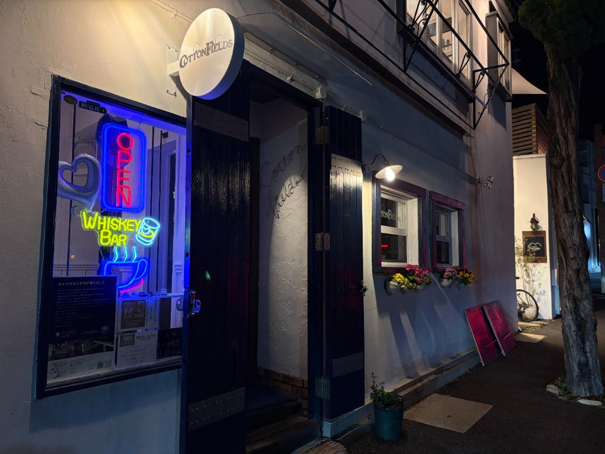

📷
COTTON FIELDS（芦屋）― アメフトOBが集まる、芦屋の大人の社交場
「アメフトOBが集まる芦屋のバー。
関西でアメフト仲間と集まるなら、ここが答え。」
関西でアメフト仲間と集まるなら、ここが答え。」
― FOOTBALL CONNECTION 編集部コメント
FOOTBALL CONNECTION MEMBER
オーナー・中川伸一氏は大阪体育大学SPARTANS OB（1989〜1992年）。近隣在住のアメフトOBが多く来店する、関西エリアのアメフトコミュニティの拠点。
🍸 このお店について
兵庫県芦屋市西山町。
静かな住宅街の一角に構える
COTTON FIELDSは、地元に愛される隠れ家バーだ。
カウンターに腰を落ち着け、グラスを傾けながら語り合う——
そんなゆったりとした夜を過ごせる空間が広がっている。
大人が落ち着けるバー空間
騒がしくなく、でも静かすぎない。
仲間との会話が弾む、ちょうどいい距離感の空間。
初めて来た人でも自然と打ち解けられる、温かい雰囲気が魅力。
仲間との会話が弾む、ちょうどいい距離感の空間。
初めて来た人でも自然と打ち解けられる、温かい雰囲気が魅力。
芦屋という立地
大阪・神戸どちらからもアクセスしやすい芦屋。
関西エリアのアメフト関係者が集まる拠点として、遠征後の打ち上げや懇親会にもぴったり。
🏈 アメフト関係者への一言
関西エリアでアメフト仲間と集まれる場所を探しているなら、
COTTON FIELDSはその答えになる。
アメフトOBが集まることで自然とコミュニティが生まれているこの店は、
初対面でも「アメフトやってた？」の一言で距離が縮まる。
試合後の打ち上げ、遠征帰りの一杯、久しぶりの同期との再会——
どんな場面でも居心地よく使える懐の深さがある。
関西のアメフトコミュニティに繋がりたい人にも、ぜひ訪れてほしい一軒だ。
📅 おすすめ利用シーン
懇親会・
同期会
同期会
二次会・
打ち上げ
打ち上げ
試合後の
一杯
一杯
初対面
交流
交流
仕事帰り
の一杯
の一杯
少人数
チーム飲み
チーム飲み
🎫 FOOTBALL CONNECTION 来店特典
来店時にスタッフへ合言葉をお伝えください
「タッチダウン！」
合言葉で来店特典あり（詳細は店舗へご確認ください）
📋 基本情報
| 🏪 店名 | COTTON FIELDS |
| 📍 エリア | 兵庫県芦屋市 |
| 🏠 住所 | 兵庫県芦屋市西山町23-21-1階 |
| 🕐 営業 | 火〜土 18:00〜24:00 |
| 🗓️ 定休日 | 日・月 |
| 🍽️ ジャンル | バー |
| 📞 電話 | 0797-90-2802 |
| 🌐 公式サイト | 公式サイト → |
| @cotton_fields_ashiya | |
| 👤 オーナー | 中川伸一（大阪体育大学SPARTANS OB） |
📝 店舗オーナーの方へ
情報の修正・追加・画像掲載をご希望の方はこちらのフォームよりご連絡ください。